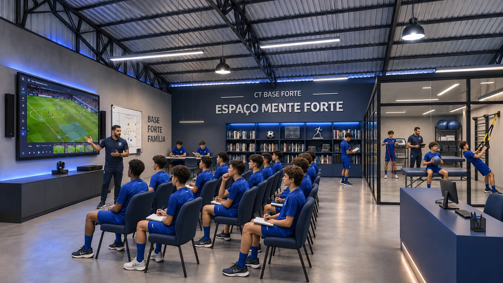
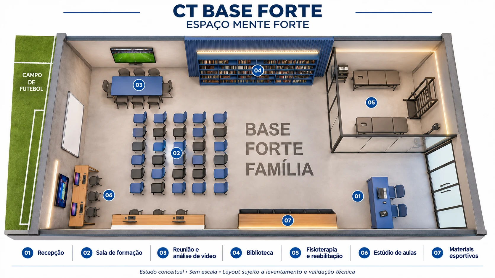

Sua marca, perto do jogo.
Proposta de espaços de exposição para empresas parceiras, com placas padronizadas no campo.
Talento precisa de oportunidade. Oportunidade precisa de estrutura. Ajude a construir a próxima etapa do CT Base Forte.

3D · VOCÊ PODE CAMINHAR AQUI↗Nossa proposta é desenvolver a leitura de jogo, a tomada de decisão e o trabalho em equipe, respeitando a idade e o momento de cada atleta.
Da iniciação ao aprofundamento da formação, queremos uma evolução gradual, com aprendizado, orientação e desafios adequados a cada etapa.
Buscamos integrar as categorias em uma proposta de trabalho comum, para que cada jovem encontre continuidade em seu desenvolvimento.
A Base Forte acredita que o futebol pode abrir caminhos. Nosso propósito é fortalecer a formação de jovens atletas, unindo desenvolvimento esportivo, educação e valores que acompanham a vida.
Queremos preparar atletas para os desafios dos treinos, dos jogos e das competições, criando condições para que possam buscar novas oportunidades no futebol. Cada trajetória exige dedicação, acompanhamento e respeito ao tempo de evolução de cada jovem.
Mais do que desenvolver habilidades com a bola, nossa proposta é formar cidadãos: pessoas que saibam respeitar, cooperar, assumir responsabilidades e enfrentar desafios dentro e fora de campo.
É por isso que buscamos parceiros para melhorar o gramado, ampliar os materiais esportivos e iniciar o Espaço Mente Forte, com biblioteca e sala de vídeo. Uma base mais preparada para quem tem tanto a desenvolver.
Cada conquista tem um começo. Este será o espaço para conhecer quem passou pelo projeto e os caminhos que seguiu no futebol e na vida.
Estamos reunindo fotos, trajetórias e depoimentos dos atletas. A próxima grande história deste espaço pode ser a de quem começou aqui.
Uma visão de futuro para o CT. Explore as propostas e descubra onde sua empresa pode fazer parte dessa transformação.
Um ambiente para desenvolver o que também faz a diferença fora das quatro linhas: conhecimento, leitura, análise de jogo e apoio à preparação dos atletas.
Caminhe pelo ambiente, olhe ao redor e descubra cada setor em uma visita virtual.
Selecione um ponto na planta para ver a proposta.

Um ponto de acolhimento e organização para receber atletas, famílias e parceiros do projeto.
Quero apoiar este projeto ↗Estudos visuais para apresentar o futuro que queremos construir.
Proposta de espaços de exposição para empresas parceiras, com placas padronizadas no campo.
Uma visão de melhorias no acesso, na iluminação e na apresentação dos espaços.
Sua empresa pode participar dessa próxima etapa. Vamos construir uma parceria que faça sentido para a sua marca e para o futuro do CT.
Os recursos dos patrocínios serão destinados a três frentes prioritárias do CT Base Forte.
Investimento na melhoria do gramado, com recuperação e cuidados com o campo para oferecer melhores condições de treino aos atletas.
MELHORIA DO CAMPOInvestimento na implantação inicial do Espaço Mente Forte, começando pela biblioteca e pela sala de vídeo.
Investimento na compra de materiais esportivos para fortalecer a rotina de treinamento e o desenvolvimento dos atletas.
Possibilidades de exposição nas placas, no site, nas redes sociais e nos uniformes, conforme o formato acordado.
Participação em melhorias ligadas à formação, ao esporte e às oportunidades de desenvolvimento dos atletas.
Proposta de compartilhar a evolução das iniciativas apoiadas e as entregas combinadas com cada parceiro.
Apoio financeiro, materiais, equipamentos ou serviços.
Há diferentes formas de somar ao projeto.
Canal de contato em definição.
Você já pode preparar sua mensagem.